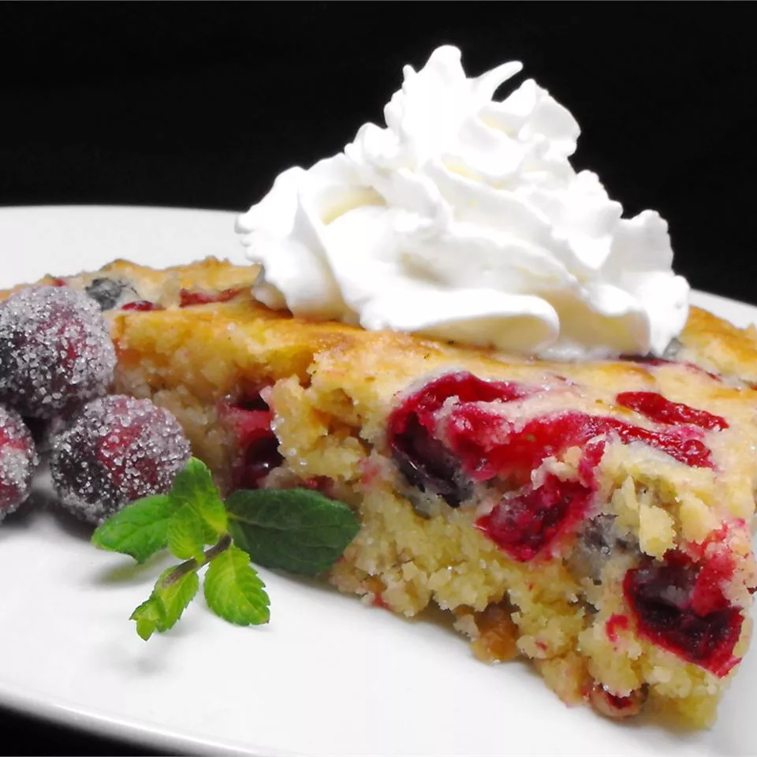

Crustless Cranberry Pie

This crustless cranberry pie comes together easily and is a delicious holiday dessert.
The crustless cranberry pie is sure to be a hit with your family and guests at your holiday meal. Serve warm with whipped cream or vanilla ice cream.
Ingredients
- Flour: One cup all-purpose flour.
- Sugar: One cup white sugar.
- Salt: Quarter teaspoon (1/4tsp) salt.
- Cranberries: Two cups fresh, whole cranberries.
- Nuts: Half cup (1/2c) chopped nuts- use walnuts or pecans.
- Butter: Half cup (1/2c) melted butter.
- Eggs: Two large eggs-beaten..
- Almond extract: One teaspoon almond extract- can also substitue vanilla extract.
Steps
- Combine: Combine sugar, flour, and salt in a bowl. Add cranberries and walnuts- toss to coat.
- Add: Stir in melted butter, eggs, and almond extract.
- Prep: Grease a 9-inch pie pan and spread batter in the prepared pan.
- Bake: Bake in 350 degree F preheated oven until a toothpick inserted in center comes out clean- about 40 minutes.